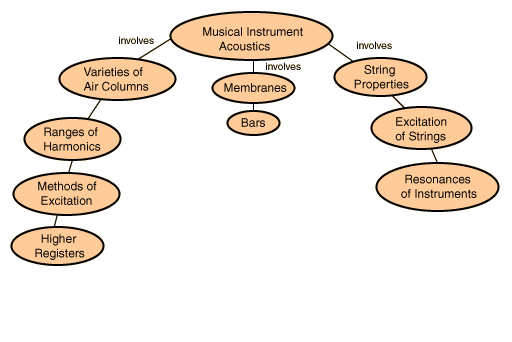

Applications of musical acoustics
Information about orchestral instruments
Index
HyperPhysics
*****
Sound and Hearing
Go Back

Classes of musical instruments
Information about orchestral instruments
Index
HyperPhysics
*****
Sound and Hearing
Go Back